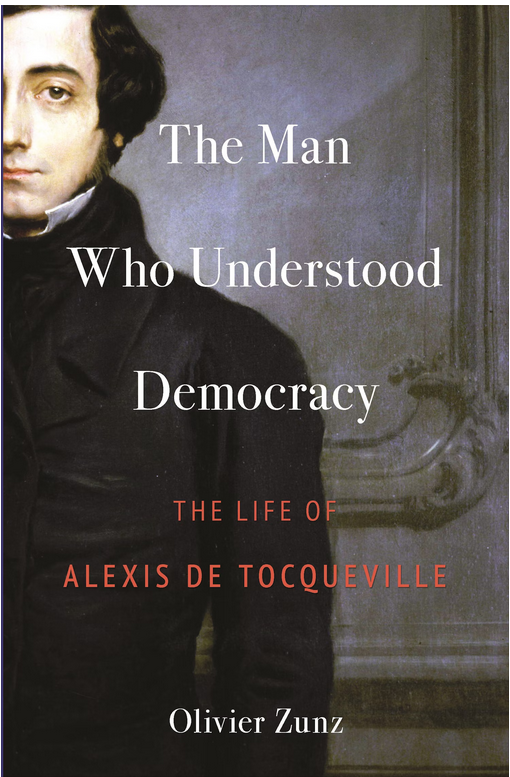

Democratie verspreidt in de samenleving een rusteloze activiteit, een overvloedige kracht, een energie die zonder haar nooit bestaat en die, als de omstandigheden ook maar enigszins gunstig zijn, wonderen kan verrichten. Dit zijn haar ware voordelen (De Tocquville, p. 128).
Alexis de Toqueville werd na de Franse Revolutie geboren en hij zou enkele jaren voor de Amerikaanse Burgeroorlog overlijden; zijn leven speelde zich af tussen hoop en vrees. De tijd waarin hij leefde was een tijd van transformatie en de maatschappelijke ontwikkelingen hielden hem zijn leven lang bezig. Hij liet ons naar een toekomst kijken waarin afscheid werd genomen van de voorgeprogrammeerde hierarchische maatschappijopbouw en waarin iedereen eeuwenlang de positie zou behouden waarin hij of zij geboren zou worden van boer tot en met koning. Hij wilde een democratische samenleving waarin individuele burgers op eigen kracht hun weg zouden vinden. Daarvoor zocht hij naar een maatschappelijk raamwerk waarin vrijheid en gelijkheid samen opgaan. Voor zijn baanbrekende ideeën haalde hij inspiratie en ideeën uit Amerika. Daar waren mensen in een nieuwe wereld met elkaar een nieuwe weg ingeslagen en daar wilde hij de aandacht op vestigen. Het kon, dat zag hij daar. Maar wie was deze Mr. America nou precies, wat hield Alexis de Toqueville bezig, wat wilde hij en waar lagen zijn krachten en zwakten? De biografie The Man Who Understood Democracy: The Life of Alexis de Toqueville van Olivier Zunz geeft ons een duidelijk beeld van hem.
Alexis de Toqueville werd in 1805 geboren in een bekende Franse aristocratische familie. Een groot deel van zijn familie was in de nasleep van de Franse Revolutie omgebracht en zijn ouders zaten ten tijde van de grote Terreur lange tijd in de gevangenis te wachten op hun beurt totdat Robespierre zelf net op tijd aan de kant werd gezet. Zijn vader kreeg een rol in het restaureren van de Bourbon-monarchie. Alexis De Toqueville kreeg privéles en was daarna een sublieme leerling in het onderwijs van Metz waar hij rechten studeerde. Als jurist kreeg hij werk in de rechtbank van Versailles. Het werk boeide hem niet en daarom maakte hij met zijn vriend Gustave de Beaumont plannen voor een reis naar Amerika. De beide vrienden wilden met elkaar het gevangeniswezen in Amerika bestuderen en onderzoeken wat dit voor Frankrijk zou kunnen betekenen. Amerika interesseerde Toqueville vooral omdat, anders dan in Frankrijk, de middenklasse daar zo’n prominente rol speelde. Over deze reis, vaak met de stoomboot, van Newport, via New York, de grote meren in het noorden, Michigan en Wisconsin, een klein deel Canada, via New England, Connecticut, Philadelphia en Baltimore, over de Mississippi naar New Orleans en terug naar Washington en New York. Negenenhalf maanden zou hun reis in totaal duren en de reis zou hem zijn leven lang blijven inspireren. Het Amerikaanse gevangeniswezen was geen oplossing voor grote problemen, maar het zorgde er wel voor dat de geest van de gevangenen veranderde. De gevangenen leerden er andere gewoonten, leerden er te werken, lezen en schrijven en in de gevangenis zelf, dat interesseerde Toqueville vooral, was er gelijkheid. Hij zag de Amerikaanse gevangenis als een microstaat van gelijkheid waar alle gevangenen dezelfde kleding droegen, hetzelfde aten en waar iedereen moest werken. Echter, op de reis had hij vooral interesse voor het democratisch karakter van deze jonge samenleving. Met talloze mensen had hij op de reis hierover gesproken, aantekeningen gemaakt en boeken gelezen. Hij zag hoe mensen met elkaar in kleinere gemeenschappen hun leven vormgaven. Hoe anders was dat in het centraal en van bovenaf aangestuurde aristocratische Frankrijk. Nadat het rapport over het gevangeniswezen was afgerond, ging hij zich bezighouden met het eerste deel van zijn studie Democratie in Amerika. In het eerste deel zou hij de democratische principes van Amerika beschrijven zoals deze in de constitutie terugkwamen, met de uitgangspunten van gelijkheid en vrijheid. Voor hem was Amerika het land van deelnemers, mensen die met elkaar associaties aangaan om verandering tot stand te brengen. Bang bleef hij wel voor uniformiteit en de tirannie van de meerderheid, maar met elkaar op lager niveau associaties aangaan was daartegen het beste medicijn. Het boek werd heel goed ontvangen. Daarna zou hij zich op het schrijven van het tweede deel storten dat twee jaar later (1840) uitkwam. In dat tweede deel gaf hij democratie een meer theoretische ondergrond en zou minder enthousiast worden ontvangen omdat het abstracter was.
Als onafhankelijk persoon voelde hij zich goed gepositioneerd om zich nu ook zelf actief met politiek bezig te gaan houden en praktisch bij te dragen aan de maatschappelijke transformatie. Hij werd lid van de Kamer van Afgevaardigden en stond daarin links van het midden. Hij was politiek patriot, kolonist én democraat tegelijkertijd. Zo was hij voor de kolonisatie van Algerije, sprak hij zich weer uit tegen slavernij en verdedigde hij democratische rechten. Hij was een betere schrijver dan spreker en als politicus viel hij niet echt op. In 1848 (na 1789 en 1830 opnieuw een revolutiejaar) kwam zijn carrière in een stroomversnelling. Hij werd participant in het historische republikeinse experiment en daarin kon hij zij democratische ideeën kwijt. Hele korte tijd was hij minister van Buitenlandse Zaken, maar al snel zou Louis Napoléon zijn hele kabinet naar huis sturen. Voor Tocqueville was het duidelijk dat Frankrijk ook dit keer er niet in zou slagen de republiek democratisch op te bouwen. Zijn eigen politieke aspiraties verdwenen en hij voelde zich buitenlander in eigen land. Hoe kwam het nu dat in Frankrijk revolutionaire en despotische regimes elkaar afwisselen en democratische vormen niet tot wasdom kwamen? Daarover wilde hij nog een studie schrijven en dat kwam er met Het Oude Regime en Revolutie, waarvan alleen het eerste deel in 1856 uit zou komen. In dat boek toont hij zich niet alleen een groot tegenstander van het autoritaire regime maar ook een verdediger van de geest van 1789. Op dat moment was zijn gezondheid al aan het verslechteren en hij zou in 1859 in Cannes overlijden.
Toqueville was een man van tegenstellingen. Aan de ene kant verdedigde hij democratische waarden, aan de andere kant bleef hij trouw aan conservatieve ideeën die hij vanuit zijn aristocratische achtergrond had meegekregen; hij was bang voor algemener kiesrecht, tegelijk streed hij tegen armoede en pauperisme; hij was voor gelijkheid en verdedigde het kolonialisme. En zo zijn meer tegenstellingen te noemen. Maar hij kwam ook zijn leven lang op voor een nieuwe samenlevingsopbouw die uitging van gelijkheid en vrijheid. Dat deed hij in een tijd dat hier heel anders over werd gedacht, zeker in zijn eigen aristocratische milieu. Hij liet zien dat aan de andere kant van de oceaan dat wel lukte en dat democratie daar functioneerde. Democratie, hoe nieuw ook, zag hij als een krachtige politieke vorm die met de wil van iedere burger tot stand kon komen. Een vorm die dus met elkaar tot stand komt en die daarbij stabiele instituties nodig heeft. De revoluties van 1789 en van 1848 waren veelbelovend maar eindigden treurig en vlak na zijn dood ging het in het jonge Amerika ook mis (waar hij zelf al langer bang voor was). Democratie is nooit af, komt met vallen en opstaan tot stand en aan dat proces heeft Alexis de Toqueville veel bijgedragen. Dit boek leert ons niet alleen Tocqueville zelf te begrijpen maar ook waar we zelf vandaan komen en hoe kwetsbaar democratie is, nog steeds balancerend tussen hoop en vrees.

Zunz, O. (2022). The Man Who Understood Democracy: The Life of Alexis de Toqueville. Princeton&Oxford: Princeton University Press.